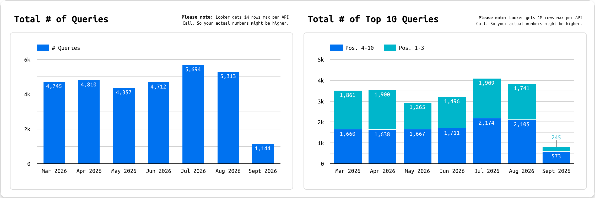
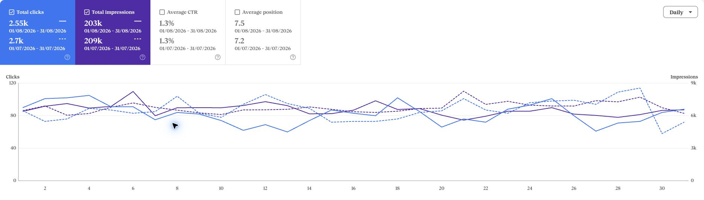
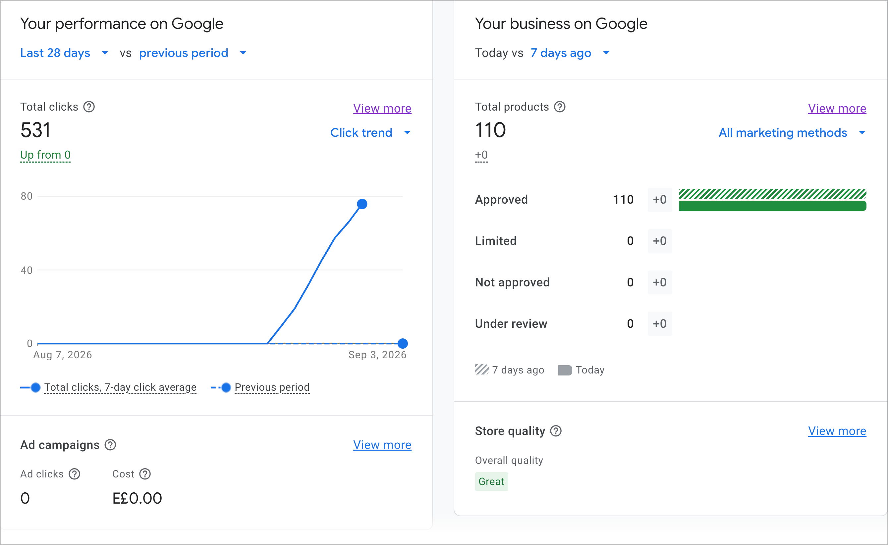

أهم نتائج الشهر
تقدم في كلمات التدفئة ومحتوى أقوى للمتجر.
- وصلت كلمات مهمة في التدفئة إلى النتائج الثلاث الأولى، وتقدمت عبارات مرتبطة بالمياه الساخنة وسخانات أريستون.
- أنجزنا أوصاف المنتجات الأساسية، ونشرنا أدلة شراء إضافية، وطوّرنا صفحات العلامات التجارية بالعربية والإنجليزية.
- استكملنا مزامنة كتالوج المتجر مع Google Merchant Center بعد الانتقال، مع إتاحة المنتجات باللغتين للسوق المصري.
- تراجع إجمالي أداء البحث بدرجة محدودة مقارنة بيوليو؛ وتبقى موافقة طاقة مصر على تحسين صفحة التسخين المركزي للمياه الخطوة المطلوبة لبدء تنفيذها.
روابط الموقع وتوزيع البحث
مواقع أكثر تشير إلى طاقة مصر، مع تراجع محدود في تغطية البحث.
273نطاقات الإحالةيوليو: 253 · زيادة 20 نطاقا
1,307الروابط الخارجية الحيةيوليو: 1,678 · انخفاض 371 رابطا
Ahrefs · مقارنة 31 يوليو و31 أغسطس 2026.
زاد تنوع المواقع التي تشير إلى طاقة مصر، بينما انخفض إجمالي الروابط الحية. لا يعني ارتفاع عدد المواقع وحده أن جودة جميع الروابط تحسنت.

1–31 أغسطس مقابل 1–31 يوليو
الكمبيوتر ينمو، والهاتف يحتاج إلى استعادة النقرات.
ارتفعت نقرات الكمبيوتر بنسبة 13.47%، بينما انخفضت نقرات الهاتف بنسبة 9.13%. الهاتف ما زال المصدر الأكبر للزيارات، لذلك يستحق الأولوية عند تحسين صفحات الخدمة وتجربة القراءة.
| الجهاز | نقرات يوليو | نقرات أغسطس | التغير | ظهور أغسطس |
|---|---|---|---|---|
| الهاتف | 2,224 | 2,021 | انخفاض 203 نقرة | 161,263 |
| الكمبيوتر | 438 | 497 | زيادة 59 نقرة | 40,464 |
| الجهاز اللوحي | 41 | 32 | انخفاض 9 نقرة | 1,614 |
Google Search Console · نسبة النقر إلى الظهور: 1.25% في أغسطس مقابل 1.29% في يوليو.

تسخين المياه والتدفئة أولا
مكاسب واضحة في كلمات مهمة، وفرص محددة للتحسين.
الترتيب في جوجل: Ahrefs أولا · مصر، الكمبيوتر · آخر رصد أغسطس: 28 أغسطس، مقارنة بـ31 يوليو. Google Search Console: متوسط الترتيب للشهر الكامل؛ القيم محسوبة تقريبيا إلى منزلة عشرية. مصدر كل مقارنة موضح في صفها.
أبرز 22 كلمة مفتاحية بحثية تحسنا
| الكلمة المفتاحية البحثية | الصفحة المرتبطة | المصدر | الترتيب في جوجل — يوليو | الترتيب في جوجل — أغسطس | النتيجة |
|---|---|---|---|---|---|
| دفاية مركزية | التدفئة المركزية | Ahrefs | 20 | 3 | تحسن 17 مركز |
| electric fireplace | الدفايات — EN | Ahrefs | 13 | 3 | تحسن 10 مركز |
| submersible pumps | المضخات — EN | Ahrefs | 15 | 5 | تحسن 10 مركز |
| grundfos egypt | Grundfos — EN | Ahrefs | 17 | 8 | تحسن 9 مركز |
| electric fireplaces | الدفايات — EN | Ahrefs | 10 | 3 | تحسن 7 مركز |
| مياه ساخنة مركزية | التسخين المركزي للمياه | Ahrefs | 12 | 6 | تحسن 6 مركز |
| مضخات مياه صغيرة | مضخات المياه | Ahrefs | 15 | 10 | تحسن 5 مركز |
| سخان اريستون غاز 10 لتر | أريستون 10 لتر | Ahrefs | 26 | 21 | تحسن 5 مركز |
| water pump egypt | المضخات — EN | Ahrefs | 24 | 19 | تحسن 5 مركز |
| fireplace egypt | الدفايات — EN | Ahrefs | 11 | 7 | تحسن 4 مركز |
| fireplace | الدفايات — EN | Ahrefs | 6 | 3 | تحسن 3 مركز |
| central heater | التدفئة المركزية — EN | Ahrefs | 5 | 2 | تحسن 3 مركز |
| سخان غاز اريستون 10 لتر | أريستون 10 لتر | Ahrefs | 22 | 19 | تحسن 3 مركز |
| radiators central | الرادياتير — EN | Ahrefs | 13 | 10 | تحسن 3 مركز |
| دفاية غاز | دفايات الغاز | Ahrefs | 3 | 1 | تحسن 2 مركز |
| دفايه غاز | دفايات الغاز | Ahrefs | 3 | 1 | تحسن 2 مركز |
| مضخة مياه غاطسة | مضخات المياه | Ahrefs | 15 | 13 | تحسن 2 مركز |
| التدفئة المركزية | التدفئة المركزية | Ahrefs | 3 | 2 | تحسن 1 مركز |
| دفايات غاز | دفايات الغاز | Ahrefs | 3 | 2 | تحسن 1 مركز |
| fireplaces | الدفايات — EN | Ahrefs | 2 | 1 | تحسن 1 مركز |
| تسخين مياه مركزي | التسخين المركزي للمياه | Ahrefs | 3 | 2 | تحسن 1 مركز |
| taqa gas | الرئيسية | Ahrefs | 22 | 21 | تحسن 1 مركز |
متابعة الكلمات ذات الأولوية
| الكلمة المفتاحية البحثية | الصفحة المرتبطة | المصدر | الترتيب في جوجل — يوليو | الترتيب في جوجل — أغسطس | النتيجة |
|---|---|---|---|---|---|
| غلايات مركزية | التسخين المركزي للمياه | Ahrefs | 2 | 2 | دون تغيير |
| غلاية مركزية | التسخين المركزي للمياه | Google Search Console | 3.5 | 2.6 | تحسن 0.9 مركز |
| غلايات تسخين مركزي | التسخين المركزي للمياه | Google Search Console | — | — | لا تتوفر بيانات ترتيب |
| غلاية تسخين مركزي | التسخين المركزي للمياه | Ahrefs | 1 | 1 | دون تغيير |
| غلاية مياه مركزي | التسخين المركزي للمياه | Google Search Console | — | — | لا تتوفر بيانات ترتيب |
| تدفئة تحت البلاط | التدفئة الأرضية — EN | Google Search Console | 12.9 | 10.9 | تحسن 2 مركز |
| التسخين المركزي | التسخين المركزي للمياه | Google Search Console | — | — | لا تتوفر بيانات ترتيب |
| تدفئة مركزية | التدفئة المركزية | Google Search Console | 5.1 | 4.7 | تحسن 0.4 مركز |
| central heating | التدفئة المركزية — EN | Ahrefs | 3 | 3 | دون تغيير |
| central water heating | تسخين المياه — EN | Google Search Console | 24.2 | 23.6 | تحسن 0.6 مركز |
| radiator | الرادياتير — EN | Google Search Console | 5.8 | — | لم تُرصد في أغسطس |
| central poilar | التدفئة المركزية — EN | Google Search Console | — | — | لا تتوفر بيانات ترتيب |
كلمات مرتبطة تحتاج إلى متابعة
| الكلمة المفتاحية البحثية | الصفحة المرتبطة | المصدر | الترتيب في جوجل — يوليو | الترتيب في جوجل — أغسطس | النتيجة |
|---|---|---|---|---|---|
| تدفئه مركزيه | التدفئة المركزية | Google Search Console | 7 | 7 | ثابتة |
| radiators central heating | التدفئة المركزية — EN | Google Search Console | 11.8 | 13.4 | تراجع 1.6 مركز |
| underfloor heating | التدفئة الأرضية — EN | Ahrefs | 23 | 23 | دون تغيير |
| مضخات المياه | مضخات المياه | Google Search Console | 16.4 | 20.5 | تراجع 4.1 مركز |
| water pump | المضخات — EN | Google Search Console | 6.2 | 10.3 | تراجع 4.1 مركز |
| booster pump | المضخات — EN | Google Search Console | 5.6 | 6 | تراجع 0.4 مركز |
الصفحات الأعلى في نقرات أغسطس
| الصفحة | نقرات يوليو | نقرات أغسطس | التغير | ظهور أغسطس |
|---|---|---|---|---|
| مضخة المياه لا تتوقف — EN | 815 | 703 | انخفاض 112 نقرة | 61,405 |
| حل ضعف ضغط المياه — AR | 305 | 231 | انخفاض 74 نقرة | 20,543 |
| مضخة المياه لا تتوقف — AR | 199 | 212 | زيادة 13 نقرة | 23,216 |
| الرئيسية — AR | 111 | 112 | زيادة 1 نقرة | 2,881 |
| تركيب مضخة المياه — AR | 108 | 80 | انخفاض 28 نقرة | 13,797 |
| الرئيسية — EN | 64 | 79 | زيادة 15 نقرة | 1,367 |
| صيانة مضخة المياه — AR | 94 | 77 | انخفاض 17 نقرة | 10,197 |
| جراندفوس — AR | 95 | 77 | انخفاض 18 نقرة | 3,226 |
| المضخات الغاطسة — AR | 40 | 39 | انخفاض 1 نقرة | 3,147 |
| اتصل بنا — AR | 50 | 39 | انخفاض 11 نقرة | 1,212 |
Google Search Console · صفحات البحث الأعلى نقرا خلال أغسطس، مقارنة بيوليو.
النشر والتحسين بالعربية والإنجليزية
المحتوى الأساسي والإضافي خلال أغسطس.
المحتوى الأساسي
أعدنا كتابة أوصاف سخانات المياه التالية، مع عناوين أوضح، ومواصفات وأسئلة شائعة، وروابط إلى المنتجات والخدمات ذات الصلة.
| المحتوى الأساسي | اللغة | الصفحة | الحالة |
|---|---|---|---|
| أتلانتيك كومبي أوبرو 100 لتر | العربية | فتح الصفحة | مُحدّث ومنشور |
| أتلانتيك كومبي أوبرو 100 لتر | English | فتح الصفحة | مُحدّث ومنشور |
| ناردي كهربائي فوري 7 و8 كيلووات | العربية | فتح الصفحة | مُحدّث ومنشور |
| ناردي كهربائي فوري 7 و8 كيلووات | English | فتح الصفحة | مُحدّث ومنشور |
| إلكترون غاز 10 لتر | العربية | فتح الصفحة | مُحدّث ومنشور |
| إلكترون غاز 10 لتر | English | فتح الصفحة | مُحدّث ومنشور |
| ناردي غاز 16 لتر | العربية | فتح الصفحة | مُحدّث ومنشور |
| ناردي غاز 16 لتر | English | فتح الصفحة | مُحدّث ومنشور |
المحتوى الإضافي
أدلة شراء وتسعير جديدة: تساعد القارئ على اختيار نوع السخان وفهم تكلفة التدفئة، مع رسوم توضيحية وروابط تقوده إلى الفئة أو الخدمة المناسبة.
| المقال | الصفحات | الحالة |
|---|---|---|
| سخان غاز أم كهرباء؟ | العربيةEnglish | منشور باللغتين |
| السخان الكهربائي: فوري أم تخزين؟ | العربيةEnglish | منشور باللغتين |
| تكلفة التدفئة المركزية في مصر | العربيةEnglish | منشور باللغتين |
تطوير صفحات العلامات التجارية: حسّنّا المحتوى العربي والإنجليزي للعلامات التالية، ووضّحنا الفروق بين عائلات المنتجات، وربطنا كل علامة بفئاتها المناسبة.
| العلامة التجارية | المحتوى المنجز | مثال منشور |
|---|---|---|
| Ariston | وصف عربي ووصف إنجليزي | الصفحة الإنجليزية |
| Nardi | وصف عربي ووصف إنجليزي | الصفحة الإنجليزية |
| Italtherm | وصف عربي ووصف إنجليزي | الصفحة الإنجليزية |
| Atlantic | وصف عربي ووصف إنجليزي | الصفحة الإنجليزية |
| Electron | وصف عربي ووصف إنجليزي | الصفحة الإنجليزية |
| Techno Gas | وصف عربي ووصف إنجليزي | الصفحة الإنجليزية |
| Momenta | وصف عربي ووصف إنجليزي | الصفحة الإنجليزية |
| Thomson | وصف عربي ووصف إنجليزي | الصفحة الإنجليزية |
| Planika | وصف عربي ووصف إنجليزي | الصفحة الإنجليزية |
| Grundfos | وصف عربي ووصف إنجليزي | الصفحة الإنجليزية |
دعمنا المحتوى بروابط داخلية من الأدلة القائمة إلى المقالات الجديدة وصفحات الخدمات، مع الفصل بين تسخين المياه وتدفئة المساحات حتى يصل القارئ إلى الحل المناسب.
Google Merchant Center بعد انتقال المتجر
كتالوج معتمد بالكامل، ونشاط متجدد على Google.
استكملنا مزامنة كتالوج المتجر بعد الانتقال، وأتحنا المنتجات بالعربية والإنجليزية للسوق المصري. وتُظهر المتابعة اعتماد جميع قوائم المنتجات دون رفض أو قيود، مع ارتفاع النقرات المسجلة في نهاية الفترة.
531إجمالي النقرات على Googleالمتجر والمنتجات · 7 أغسطس–3 سبتمبر
110قائمة منتج معتمدةدون رفض أو قيود أو انتظار مراجعة
Greatتقييم جودة المتجرحسب Google Merchant Center
النقرات: آخر 28 يوما، من 7 أغسطس إلى 3 سبتمبر 2026. حالة المنتجات وتقييم المتجر: 5 سبتمبر 2026.

أولويات المرحلة التالية
- إعادة بناء جميع صفحات الحلول والخدمات بالموقع.
نحتاج إلى إعادة بناء كل صفحة هبوط لكل حل وخدمة تقدمها طاقة مصر، بالعربية والإنجليزية، بدءا بتسخين المياه والتدفئة المركزية. يشمل ذلك المحتوى وتصميم الصفحة، وتوضيح مزايا الحل واستخداماته، وتسهيل طلب عرض السعر أو التواصل.
العائق الحالي: موافقة طاقة مصر على التنفيذ. أُرسل تصور تحسين صفحة التسخين المركزي للمياه يوم 12 أغسطس، وتبعته رسالة تذكير يوم 15 أغسطس. لم تصل الموافقة حتى تاريخ إعداد التقرير، ولذلك لم يبدأ تنفيذ التصور المقترح.
القرار المطلوب لبدء الأولوية الأولى: اعتماد إعادة بناء جميع صفحات الحلول والخدمات، والموافقة على التصور المرسل أو إرسال الملاحظات النهائية عليه لبدء تنفيذ الصفحة الأولى ثم استكمال بقية الصفحات. مراجعة التصور المرسل.
- تسخين المياه والتدفئة المركزية: تعزيز ترتيب الكلمات المفتاحية البحثية المرتبطة بالغلايات والمياه الساخنة والتدفئة الأرضية، مع الحفاظ على الكلمات التي تقدمت.
- أوصاف المنتجات: استكمال كتابة وتحسين الأوصاف العربية والإنجليزية لجميع المنتجات المتبقية، بدءا بمنتجات تسخين المياه والتدفئة المركزية وتفاصيلها المطلوبة في Merchant Center.
- الروابط الداخلية: تقوية الروابط بين الأدلة وصفحات الحلول والخدمات والفئات والمنتجات، ومراجعة صفحات المضخات التي فقدت نقرات أو ترتيبا، مع فحصها على الهاتف.